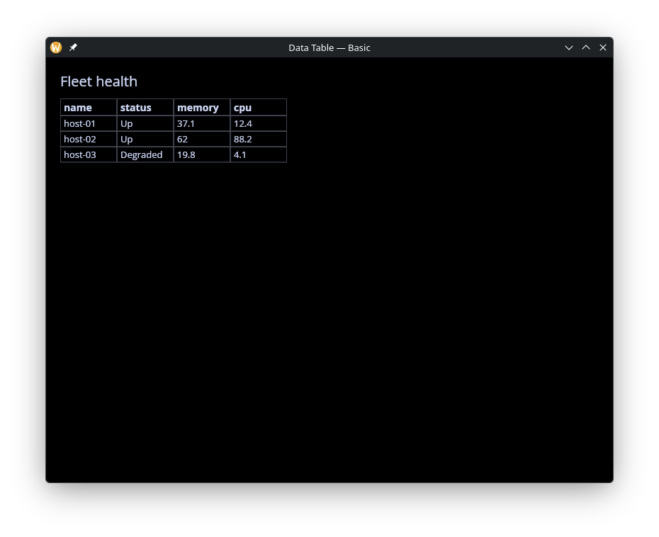
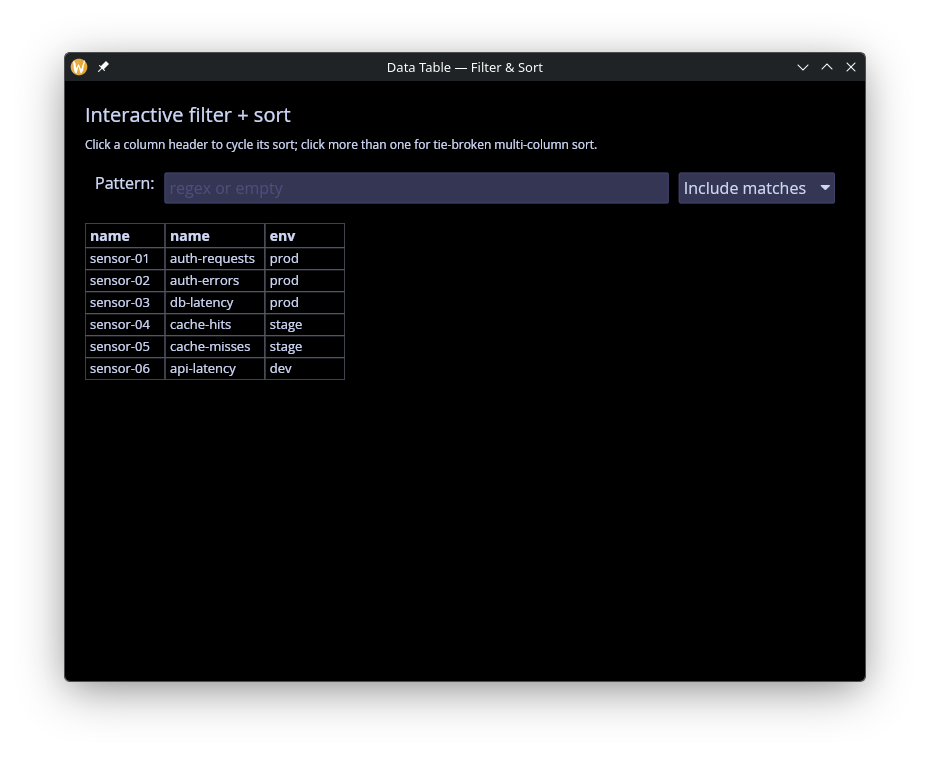
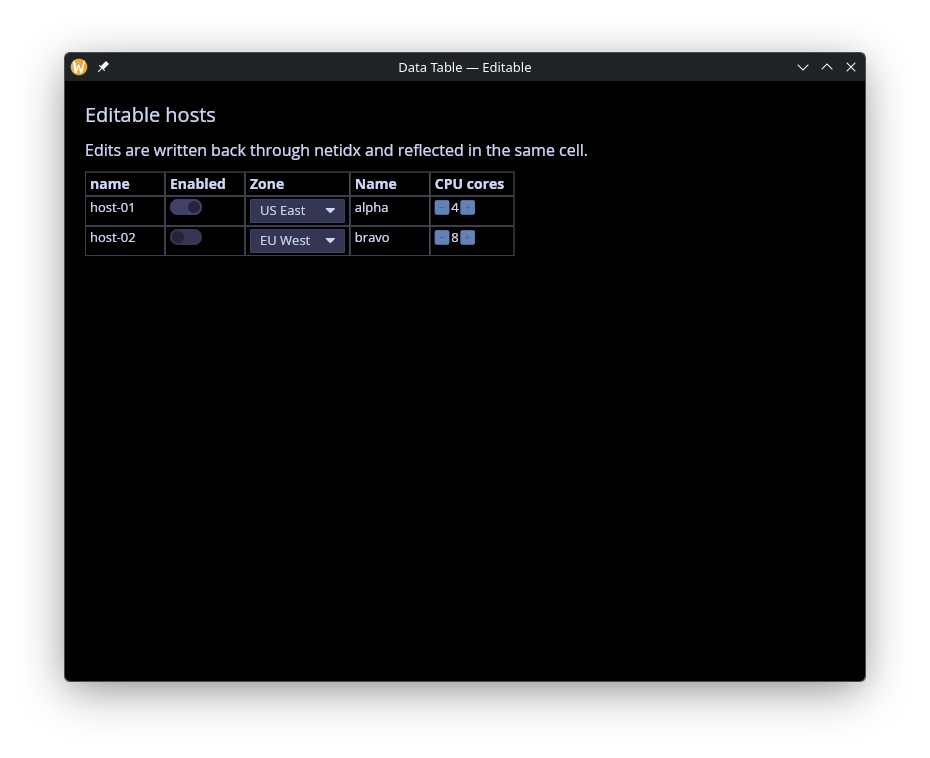
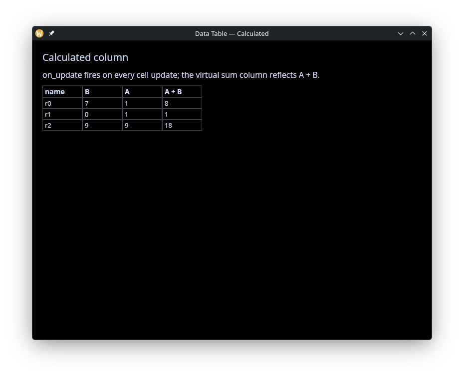
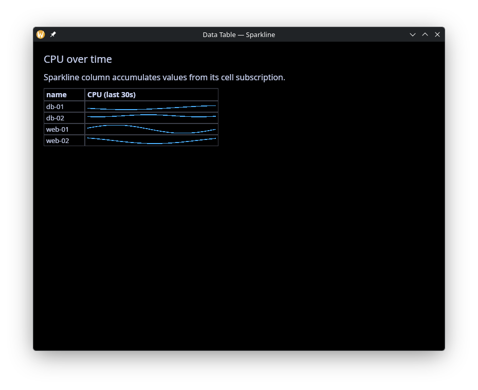
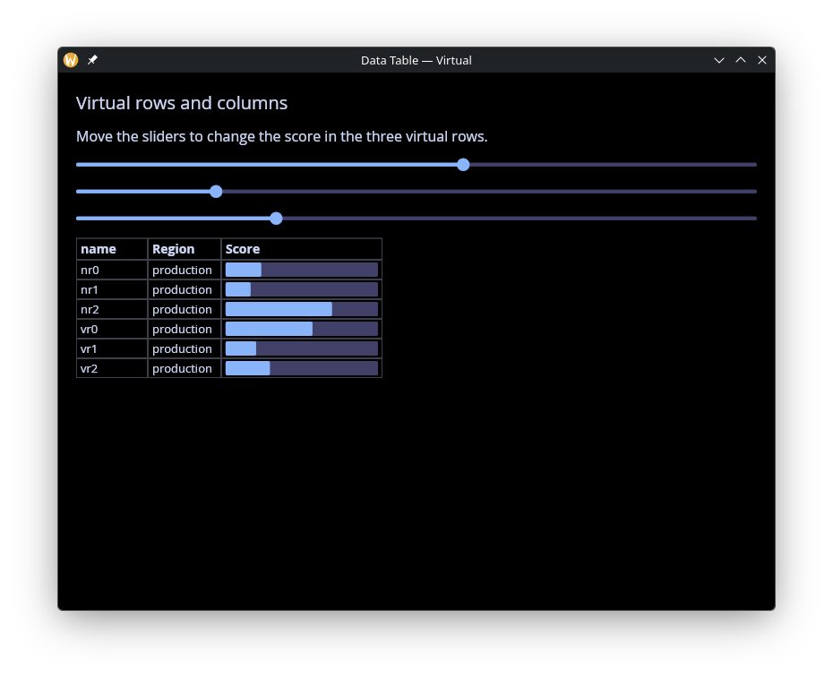

The Data Table Widget
A spreadsheet-style widget that renders a netidx Table as a grid of
live-subscribed cells. Columns are typed: each one picks the editor
(text, toggle, pick-list, spinner), visualization (progress bar,
sparkline), or action (button) that cells should use. Row sort, row
filter, column widths, and the selection set are all controlled from
graphix — the widget is the rendering surface and the subscription
manager, nothing more.
Rows that are absolute netidx paths trigger live subscriptions.
Non-absolute row names render as virtual rows whose cells draw from
each column's default_value ref instead of a subscription. Virtual
columns work the same way: a column that appears in column_types
but not in the Table's columns array is a column whose values
come solely from its default. Virtual and live rows/columns freely
mix.
Interface
type SortDirection = [`Ascending, `Descending];
type SortBy = { column: string, direction: SortDirection };
type ColumnType = [
`Text({ on_edit: [fn(#path: string, #value: Any) -> Any, null] }),
`Toggle({ on_edit: [fn(#path: string, #value: bool) -> Any, null] }),
`Combo({
choices: Array<{ id: string, label: string }>,
on_edit: [fn(#path: string, #value: string) -> Any, null]
}),
`Spin({
min: f64,
max: f64,
increment: f64,
on_edit: [fn(#path: string, #value: f64) -> Any, null]
}),
`Progress,
`Button({
on_click: [fn(#path: string, #value: Any) -> Any, null]
}),
`Sparkline({
history_seconds: f64,
min: [f64, null],
max: [f64, null]
})
];
type ColumnSpec = {
typ: ColumnType,
display_name: [string, null],
default_value: &[null, string, Map<string, Any>],
on_resize: &[fn(f64) -> Any, null],
width: &[f64, null]
};
val data_table: fn(
?#sort_by: &Array<SortBy>,
?#column_types: &Map<string, ColumnSpec>,
?#selection: &Array<string>,
?#show_row_name: &bool,
?#on_select: [fn(#path: string) -> Any, null],
?#on_activate: [fn(#path: string) -> Any, null],
?#on_header_click: [fn(#column: string) -> Any, null],
?#on_update: [fn(#path: string, #value: Primitive) -> Any, null],
#table: &sys::net::Table
) -> Widget;
val text_column: fn(
?#on_edit: [fn(#path: string, #value: Any) -> Any, null],
?#display_name: [string, null],
?#default_value: &[null, string, Map<string, Any>],
?#on_resize: &[fn(f64) -> Any, null],
?#width: &[f64, null]
) -> ColumnSpec;
val toggle_column: fn(
?#on_edit: [fn(#path: string, #value: bool) -> Any, null],
?#display_name: [string, null],
?#default_value: &[null, string, Map<string, Any>],
?#on_resize: &[fn(f64) -> Any, null],
?#width: &[f64, null]
) -> ColumnSpec;
val combo_column: fn(
#choices: Array<{ id: string, label: string }>,
?#on_edit: [fn(#path: string, #value: string) -> Any, null],
?#display_name: [string, null],
?#default_value: &[null, string, Map<string, Any>],
?#on_resize: &[fn(f64) -> Any, null],
?#width: &[f64, null]
) -> ColumnSpec;
val spin_column: fn(
#min: f64,
#max: f64,
#increment: f64,
?#on_edit: [fn(#path: string, #value: f64) -> Any, null],
?#display_name: [string, null],
?#default_value: &[null, string, Map<string, Any>],
?#on_resize: &[fn(f64) -> Any, null],
?#width: &[f64, null]
) -> ColumnSpec;
val progress_column: fn(
?#display_name: [string, null],
?#default_value: &[null, string, Map<string, Any>],
?#on_resize: &[fn(f64) -> Any, null],
?#width: &[f64, null]
) -> ColumnSpec;
val button_column: fn(
?#on_click: [fn(#path: string, #value: Any) -> Any, null],
?#display_name: [string, null],
?#default_value: &[null, string, Map<string, Any>],
?#on_resize: &[fn(f64) -> Any, null],
?#width: &[f64, null]
) -> ColumnSpec;
val sparkline_column: fn(
#history_seconds: f64,
?#min: [f64, null],
?#max: [f64, null],
?#display_name: [string, null],
?#default_value: &[null, string, Map<string, Any>],
?#on_resize: &[fn(f64) -> Any, null],
?#width: &[f64, null]
) -> ColumnSpec
data_table Parameters
-
#table-- The table shape.{ rows: Array<string>, columns: Array<string> }.sys::net::list_table(path)produces this by inspecting the netidx resolver. The caller owns the shape: to filter, sort, hide, or reorder rows and columns, build the Table record in graphix and hand the result todata_table. Every change to this ref is reconciled against the current subscription set. -
#column_types-- Map from column name toColumnSpec, built with the helper constructors (text_column,toggle_column, ...). A column that doesn't appear in#table.columnsbut is declared here becomes a virtual column driven entirely by itsdefault_value. Updating this ref to change only display names, callbacks, widths, or defaults does not tear down row subscriptions — only adding or removing columns triggers resubscribes. -
#sort_by-- Array of sort keys applied in order. The first is the primary sort; later keys break ties. Empty list (the default) preserves theTable's row order. Sort values come from live subscriptions to the named columns, so rows without a subscribable value for a given column sort to the end. -
#selection-- Controlled set of selected cell paths. For cells in the row-name column this is just"row_path"; for every other cell it is"row_path/col_name". The widget's own click / keyboard handlers never mutate this ref directly — they fire#on_selectand#on_activatecallbacks that the caller uses to drive the ref however they want (single-select, multi-select, toggle, etc.). -
#show_row_name-- Whentrue(the default) a synthesized leftmost column shows each row's basename (Path::basename(row)). Setfalsefor tables where the row identity is already carried by a regular column. -
#on_select-- Fired whenever a cell is clicked or keyboard navigation lands on a cell. The callback receives the full cell path ("row_path/col_name"for data cells,"row_path"for the row-name column). -
#on_activate-- Fired when the user clicks a row-name cell or presses Enter while a row is selected. Receives the row path. -
#on_header_click-- Fired when the user clicks a data column's header label. Receives the column name. -
#on_update-- Fired once per subscription update on every cell — useful when you want to mirror live values into graphix state (e.g. re-derive an aggregate) without subscribing separately. Receives the cell path and new value.
Column Types
Each ColumnSpec carries a typ: ColumnType picked with one of the
helper constructors:
-
text_column-- Plain text. Withon_editthe cell becomes editable: clicking a selected cell opens a text field;Entercommits the typed value viaon_edit,Escapecancels. The widget attempts to parse the buffer as a typed graphix value; if parsing fails the raw string is sent instead, so users can enterhellowithout quotes. -
toggle_column-- Renders a toggler. Cell values"true"or"1"turn it on. Withon_editthe user can flip the toggle. -
combo_column-- Drop-down with a fixed set ofchoices. Each choice has anid(the raw value published / sent back throughon_edit) and alabel(what the user sees). -
spin_column-- Numeric spinner withmin,max, andincrementbounds;on_editreceives the clamped new value. -
progress_column-- Read-only progress bar. Cell values are clamped to[0, 1]. -
button_column-- Each cell renders as a button labelled with the cell's current value.on_clickfires with the cell path and current value. -
sparkline_column-- Rolling-line visualization accumulating published values overhistory_seconds. By default the y-axis is shared across every cell in the column (auto-scaled to the union of all rows' values) so cells are visually comparable. Pass#min/#maxto fix the axis instead.
Column Widths and Resizing
Widths are controlled by two refs per column:
-
width: &[f64, null]-- WhenSome(f64)the column is pinned to that width (and the resize handle at the column header vanishes unless anon_resizecallback is also set). Whennullthe column auto-sizes to its content, with a per-column cap (default 300px). -
on_resize: &[fn(f64) -> Any, null]-- Fired while the user drags a column header's right edge. The callable receives the new pixel width. The reference is a&field so the callable can be swapped, nulled, or initialized reactively.
Double-clicking any column's resize handle auto-fits every column to the widest cell in the entire table (not just the visible window).
Default Values and Virtual Cells
Each ColumnSpec.default_value is a &[null, string, Map<string, Any>]. When a cell has no subscription value (either because the
row is virtual or because the subscription hasn't produced yet) the
widget renders the default:
null-- Cell is blank.string-- Same default shown for every row in the column.Map<string, Any>-- Per-row defaults keyed by the row's basename. Rows without a matching key fall back to blank.
When the default ref updates reactively (e.g. the map changes), the widget re-reads it and refreshes the affected cells. Sparkline columns additionally push each new numeric default into the rolling history, so a virtual-column sparkline fed from graphix state accumulates points the same way a subscribed one does.
Keyboard Navigation
The widget is focusable: clicking into it grants keyboard focus.
Arrow keys move the selection (the currently-rendered selected cell
scrolls into view as needed). Enter on a row-name cell fires
on_activate; Space on an editable cell opens its editor;
Escape cancels an in-progress edit.
Examples
Basic
Minimal usage: publish three hosts and hand the
sys::net::list_table output to data_table with no column
configuration. Cells display string values inferred from the netidx
types.
use gui;
use gui::data_table;
use gui::column;
use gui::text;
use sys;
use sys::net;
mod icon;
let publish_host = |#name, #status, #cpu, #mem| {
sys::net::publish("/local/graphix/data_table_basic/[name]/status", status);
sys::net::publish("/local/graphix/data_table_basic/[name]/cpu", cpu);
sys::net::publish("/local/graphix/data_table_basic/[name]/memory", mem);
};
publish_host(#name: "host-01", #status: `Up, #cpu: 12.4, #mem: 37.1);
publish_host(#name: "host-02", #status: `Up, #cpu: 88.2, #mem: 62.0);
publish_host(#name: "host-03", #status: `Degraded, #cpu: 4.1, #mem: 19.8);
// list_table inspects the resolver to discover children of this path.
let tbl = sys::net::list_table("/local/graphix/data_table_basic")$;
let layout = column(
#spacing: &12.0,
#padding: &`All(20.0),
#width: &`Fill,
#height: &`Fill,
&[
text(#size: &20.0, &"Fleet health"),
data_table(#table: &tbl)
]
);
[&window(
#icon: &icon::icon,
#title: &"Data Table — Basic",
#theme: &`CatppuccinMocha,
&layout
)]

Filter and Sort
Row filtering (a regex over basenames) and sort configuration done
in graphix before #table and #sort_by are handed to the widget.
Shows how the caller owns the data pipeline end to end.
use gui;
use gui::data_table;
use gui::row;
use gui::column;
use gui::text;
use gui::text_input;
use gui::pick_list;
use array;
use opt;
use re;
use str;
use sys;
use sys::net;
mod icon;
// Publish 6 sensors across three environments; the sidebar controls
// let the user pick a row filter mode and a sort direction live.
sys::net::publish("/local/graphix/data_table_filter/sensor-01/name", "auth-requests");
sys::net::publish("/local/graphix/data_table_filter/sensor-01/env", "prod");
sys::net::publish("/local/graphix/data_table_filter/sensor-02/name", "auth-errors");
sys::net::publish("/local/graphix/data_table_filter/sensor-02/env", "prod");
sys::net::publish("/local/graphix/data_table_filter/sensor-03/name", "db-latency");
sys::net::publish("/local/graphix/data_table_filter/sensor-03/env", "prod");
sys::net::publish("/local/graphix/data_table_filter/sensor-04/name", "cache-hits");
sys::net::publish("/local/graphix/data_table_filter/sensor-04/env", "stage");
sys::net::publish("/local/graphix/data_table_filter/sensor-05/name", "cache-misses");
sys::net::publish("/local/graphix/data_table_filter/sensor-05/env", "stage");
sys::net::publish("/local/graphix/data_table_filter/sensor-06/name", "api-latency");
sys::net::publish("/local/graphix/data_table_filter/sensor-06/env", "dev");
let raw_tbl = sys::net::list_table("/local/graphix/data_table_filter")$;
// Filter controls: a regex pattern and whether it includes or excludes.
// Unlike earlier versions where the widget carried a FilterSpec, the
// caller now reshapes the Table in graphix before passing it in.
let pattern = "";
let mode: [`Include, `Exclude] = `Include;
let tbl: sys::net::Table = raw_tbl;
tbl <- select str::len(pattern) {
n if n == 0 => raw_tbl,
_ => {
let name_of = |r: string| opt::or_default(str::basename(r), r);
let matches = |r: string| opt::or_default(
re::is_match(#pat: pattern, name_of(r))$, false);
let keep = |r: string| select mode {
`Include => matches(r),
`Exclude => !matches(r)
};
{ raw_tbl with rows: array::filter(raw_tbl.rows, keep) }
}
};
// Sort controls: pick a column and direction.
let sort_col: string = "name";
let sort_dir: SortDirection = `Ascending;
let sort_by: Array<SortBy> = [];
sort_by <- [{ column: sort_col, direction: sort_dir }];
let controls = row(
#spacing: &10.0,
#padding: &`All(10.0),
&[
text(&"Pattern:"),
text_input(
#on_input: |v: string| pattern <- v,
#placeholder: &"regex or empty",
#width: &`Fill,
&pattern
),
pick_list(
#on_select: |choice: string| mode <- select choice {
"Include matches" => `Include,
_ => `Exclude
},
#selected: &select mode {
`Include => "Include matches",
`Exclude => "Exclude matches"
},
&["Include matches", "Exclude matches"]
),
pick_list(
#on_select: |v: string| sort_col <- v,
#selected: &sort_col,
&["name", "env"]
),
pick_list(
#on_select: |v: string| sort_dir <- select v {
"Ascending" => `Ascending,
_ => `Descending
},
#selected: &select sort_dir {
`Ascending => "Ascending",
`Descending => "Descending"
},
&["Ascending", "Descending"]
)
]
);
let layout = column(
#spacing: &10.0,
#padding: &`All(20.0),
#width: &`Fill,
#height: &`Fill,
&[
text(#size: &20.0, &"Interactive filter + sort"),
controls,
data_table(
#sort_by: &sort_by,
#table: &tbl
)
]
);
[&window(
#icon: &icon::icon,
#title: &"Data Table — Filter & Sort",
#theme: &`CatppuccinMocha,
&layout
)]

Editable
Every editable column type in one place: Text, Toggle, Combo,
Spin. Each cell is published with an on_write handler so edits
round-trip through netidx.
use gui;
use gui::data_table;
use gui::column;
use gui::text;
use sys;
use sys::net;
mod icon;
// Four editable columns demonstrating every ColumnType that takes
// user input: Text, Toggle, Combo, Spin. Each cell is published with
// an #on_write handler so edits round-trip through netidx.
let host_01_name = "alpha";
let host_01_enabled = true;
let host_01_zone = "us-east-1";
let host_01_cpu = f64:4.0;
sys::net::publish(
#on_write: |v: string| host_01_name <- v,
"/local/graphix/data_table_editable/host-01/name",
host_01_name
);
sys::net::publish(
#on_write: |v: bool| host_01_enabled <- v,
"/local/graphix/data_table_editable/host-01/enabled",
host_01_enabled
);
sys::net::publish(
#on_write: |v: string| host_01_zone <- v,
"/local/graphix/data_table_editable/host-01/zone",
host_01_zone
);
sys::net::publish(
#on_write: |v: f64| host_01_cpu <- v,
"/local/graphix/data_table_editable/host-01/cpu",
host_01_cpu
);
let host_02_name = "bravo";
let host_02_enabled = false;
let host_02_zone = "eu-west-1";
let host_02_cpu = f64:8.0;
sys::net::publish(
#on_write: |v: string| host_02_name <- v,
"/local/graphix/data_table_editable/host-02/name",
host_02_name
);
sys::net::publish(
#on_write: |v: bool| host_02_enabled <- v,
"/local/graphix/data_table_editable/host-02/enabled",
host_02_enabled
);
sys::net::publish(
#on_write: |v: string| host_02_zone <- v,
"/local/graphix/data_table_editable/host-02/zone",
host_02_zone
);
sys::net::publish(
#on_write: |v: f64| host_02_cpu <- v,
"/local/graphix/data_table_editable/host-02/cpu",
host_02_cpu
);
let tbl = sys::net::list_table("/local/graphix/data_table_editable")$;
// Each on_edit callback writes the new value back to the published
// path. The publisher's #on_write fires, updates the backing variable,
// and the data_table's subscription receives the new value — a full
// round trip through netidx.
let types = {
"name" => text_column(
#on_edit: |#path: string, #value: Any|
sys::net::write(path, value)$,
#display_name: "Name"
),
"enabled" => toggle_column(
#on_edit: |#path: string, #value: bool|
sys::net::write(path, value)$,
#display_name: "Enabled"
),
"zone" => combo_column(
#choices: [
{ id: "us-east-1", label: "US East" },
{ id: "us-west-2", label: "US West" },
{ id: "eu-west-1", label: "EU West" },
{ id: "ap-south-1", label: "Asia Pacific" }
],
#on_edit: |#path: string, #value: string|
sys::net::write(path, value)$,
#display_name: "Zone"
),
"cpu" => spin_column(
#min: f64:1.0,
#max: f64:64.0,
#increment: f64:1.0,
#on_edit: |#path: string, #value: f64|
sys::net::write(path, value)$,
#display_name: "CPU cores"
)
};
let selection: Array<string> = [];
let layout = column(
#spacing: &12.0,
#padding: &`All(20.0),
#width: &`Fill,
#height: &`Fill,
&[
text(#size: &20.0, &"Editable hosts"),
text(&"Edits are written back through netidx and reflected in the same cell."),
data_table(
#column_types: &types,
#selection: &selection,
#on_select: |#path| selection <- [path],
#table: &tbl
)
]
);
[&window(
#icon: &icon::icon,
#title: &"Data Table — Editable",
#theme: &`CatppuccinMocha,
&layout
)]

Calculated Columns
A virtual column whose default_value is a reactive
Map<string, Any>, rebuilt whenever any subscribed cell updates.
Demonstrates deriving per-row aggregates (here, sums) without
touching netidx.
use gui;
use gui::data_table;
use gui::column;
use gui::text;
use str;
use sys;
use sys::net;
mod icon;
// Two published columns A and B. A virtual "sum" column gets its
// value from a per-row default ref; the on_update callback watches
// every cell update on subscribed cells and pushes the new (a+b)
// total into the corresponding sum ref.
let rv = {
let clock = time::timer(5, true);
|| rand::rand(#start:0, #end:10, #clock)
};
publish("/local/graphix/data_table_calculated/r0/A", rv());
publish("/local/graphix/data_table_calculated/r1/A", rv());
publish("/local/graphix/data_table_calculated/r2/A", rv());
publish("/local/graphix/data_table_calculated/r0/B", rv());
publish("/local/graphix/data_table_calculated/r1/B", rv());
publish("/local/graphix/data_table_calculated/r2/B", rv());
let tbl = sys::net::list_table("/local/graphix/data_table_calculated")$;
let data: Map<string, Map<string, i64>> = {};
// on_update is called on updates to netidx subscriptions by the table
let on_update = |#path: string, #value: Primitive| {
let v = cast<i64>(value)$;
let d = v ~ data; // run only when v updates
let (row, col) = opt::or_never(str::row_col(path));
let d = map::change(d, col, {}, |rows| map::insert(rows, row, v));
let sum = map::fold(d, 0, |sum, (col, rows)| select col {
"sum" => sum,
col => sum + map::get_or(rows, row, 0)
});
data <- map::change(d, "sum", {}, |sums| map::insert(sums, row, sum))
};
let types = {
"sum" => text_column(
#display_name: "A + B",
#default_value: &map::get_or(data, "sum", {})
)
};
let layout = column(
#spacing: &12.0,
#padding: &`All(20.0),
#width: &`Fill,
#height: &`Fill,
&[
text(#size: &20.0, &"Calculated column"),
text(&"on_update fires on every cell update; the virtual sum column reflects A + B."),
data_table(
#column_types: &types,
#on_update,
#table: &tbl
)
]
);
[&window(
#icon: &icon::icon,
#title: &"Data Table — Calculated",
#theme: &`CatppuccinMocha,
&layout
)]

Sparkline
Live rolling charts per row with automatic column-wide y-axis sharing, so cells are visually comparable without the caller picking bounds.
use gui;
use gui::data_table;
use gui::column;
use gui::text;
use core::math;
use sys;
use sys::net;
use sys::time;
mod icon;
// Four rows, each publishing a cpu value that updates once a second
// on a sine-wave pattern staggered per row. The Sparkline column
// accumulates the history and draws a rolling chart.
let tick = time::timer(duration:1.s, true);
let t = 0.;
t <- tick ~ t + 1.;
let cpu_1 = 0.0;
cpu_1 <- tick ~ 50.0 + 40.0 * math::sin(t / 4.0);
let cpu_2 = 0.0;
cpu_2 <- tick ~ 50.0 + 30.0 * math::sin((t + 10.) / 5.0);
let cpu_3 = 0.0;
cpu_3 <- tick ~ 40.0 + 20.0 * math::sin((t + 20.) / 6.0);
let cpu_4 = 0.0;
cpu_4 <- tick ~ 70.0 + 10.0 * math::sin((t + 30.) / 3.0);
sys::net::publish("/local/graphix/data_table_sparkline/web-01/cpu", cpu_1);
sys::net::publish("/local/graphix/data_table_sparkline/web-02/cpu", cpu_2);
sys::net::publish("/local/graphix/data_table_sparkline/db-01/cpu", cpu_3);
sys::net::publish("/local/graphix/data_table_sparkline/db-02/cpu", cpu_4);
let tbl = sys::net::list_table("/local/graphix/data_table_sparkline")$;
let types = {
"cpu" => sparkline_column(
#history_seconds: 30.0,
#display_name: "CPU (last 30s)",
#width: &260.0
)
};
let layout = column(
#spacing: &12.0,
#padding: &`All(20.0),
#width: &`Fill,
#height: &`Fill,
&[
text(#size: &20.0, &"CPU over time"),
text(&"Sparkline column accumulates values from its cell subscription."),
data_table(#column_types: &types, #table: &tbl)
]
);
[&window(
#icon: &icon::icon,
#title: &"Data Table — Sparkline",
#theme: &`CatppuccinMocha,
&layout
)]

Virtual Rows and Columns
Mix live subscribed rows with virtual rows whose cells come from
default_value. Virtual-column-plus-virtual-row combinations give
you fully client-side cells.
use gui;
use gui::data_table;
use gui::slider;
use gui::column;
use gui::text;
use sys;
mod icon;
let rv = {
let clock = time::timer(5, true);
|| rand::rand(#start:0., #end:1., #clock)
};
net::publish("/local/graphix/data_table_virtual/nr0/score", rv());
net::publish("/local/graphix/data_table_virtual/nr1/score", rv());
net::publish("/local/graphix/data_table_virtual/nr2/score", rv());
// In the Table record defining the structure of a data table, rows that are not
// absolute netidx paths are treated "virtual". The data_table will not attempt
// to subscribe to virtual rows, all values in virtual rows come from the
// column_types default_value refs. A uniform default propagates one string to
// every row; a per-row &Any map lets each row have its own value that updates
// reactively. Columns can also be virtual, any column with a column type will
// become a column regardless of whether it appears in the table description.
//
// Virtual rows and columns can be mixed with rows and columns in netidx.
// Everything is ultimatly defined by the Table record delived to data_table.
let tbl = net::list_table("/local/graphix/data_table_virtual")$;
let tbl = uniq({
rows: array::concat(tbl.rows, ["vr0", "vr1", "vr2"]),
columns: array::concat(["region"], tbl.columns)
});
let score: Map<string, f64> = {};
let types = {
// Every row sees the same literal for "region".
"region" => text_column(
#display_name: "Region",
#default_value: &"production"
),
// Virtual column: no matching key in tbl.columns, but has a
// per-row default_value, so the table synthesizes it.
"score" => progress_column(
#display_name: "Score",
#default_value: &score,
#width: &f64:180.0
)
};
let layout = column(
#spacing: &14.0,
#padding: &`All(20.0),
#width: &`Fill,
#height: &`Fill,
&[
text(#size: &20.0, &"Virtual rows"),
text(&"Move the sliders to drive change the score in the three virtual rows"),
slider(
#on_change: |v: f64| score <- v ~ map::insert(score, "vr0", v),
#min: &f64:0.0, #max: &f64:1.0, #step: &f64:0.01,
&map::get_or(score, "vr0", 0.)
),
slider(
#on_change: |v: f64| score <- v ~ map::insert(score, "vr1", v),
#min: &f64:0.0, #max: &f64:1.0, #step: &f64:0.01,
&map::get_or(score, "vr1", 0.)
),
slider(
#on_change: |v: f64| score <- v ~ map::insert(score, "vr2", v),
#min: &f64:0.0, #max: &f64:1.0, #step: &f64:0.01,
&map::get_or(score, "vr2", 0.)
),
data_table(#column_types: &types, #table: &tbl)
]
);
[&window(
#icon: &icon::icon,
#title: &"Data Table — Virtual",
#theme: &`CatppuccinMocha,
&layout
)]

Dashboard
Kitchen-sink example combining Combo state pickers, Sparkline
CPU metrics, Progress uptime, a Button action column, a regex
row filter in a text input, sort controlled by pick-lists, and
selection echoed in the footer.
use gui;
use gui::data_table;
use gui::row;
use gui::column;
use gui::text;
use gui::text_input;
use gui::pick_list;
use core::math;
use array;
use opt;
use re;
use str;
use sys;
use sys::net;
use sys::time;
mod icon;
// Kitchen-sink example combining the main data_table features:
// * Combo column for state picklists
// * Sparkline column for rolling cpu metrics
// * Progress column for uptime %
// * Button column that fires an action callback
// * Regex row filter wired to a text input
// * Column sort driven by pick_list widgets in the sidebar
// * Selection echoed in the footer
let t = {
let tick = time::timer(duration:1.s, true);
let t = 0.;
t <- tick ~ t + 1.;
t
};
type State = [`Healthy, `Degraded, `Down];
// Publish a tiny fleet of services. state is writable (Combo).
let svc = |#state:State, #cpu:f64, #uptime:f64, #name:string| {
sys::net::publish(
#on_write: |v: string| state <- cast<State>(v)$,
"/local/graphix/data_table_dashboard/[name]/state",
state
);
// svc_1_cpu <- ;
sys::net::publish("/local/graphix/data_table_dashboard/[name]/cpu", cpu);
sys::net::publish("/local/graphix/data_table_dashboard/[name]/uptime", uptime);
sys::net::publish("/local/graphix/data_table_dashboard/[name]/action", "Restart");
};
// single random number
let rn = |start: f64, end: f64| -> f64 rand::rand(#start, #end, #clock:1);
let published = array::init(1024, |i| svc(
#name:"svc-[i]",
#state:select rand::rand(#clock:1) {
n if n <= 0.8 => `Healthy,
n if n <= 0.9 => `Degraded,
_ => `Down
},
#uptime:rn(0., 1.),
#cpu:rn(0., 30.) + rn(1., 5.) * math::sin((t + rn(0., 5.)) / rn(1., 5.))
));
// Caller-side filter: apply the regex to the Table's rows before
// handing the Table to the widget.
let pattern = "";
let tbl: sys::net::Table = {
let tbl = sys::net::list_table("/local/graphix/data_table_dashboard")$;
select str::len(pattern) {
n if n == 0 => tbl,
_ => {
let rows = array::filter(tbl.rows, |r| {
let row = opt::or_default(str::basename(r), r);
select re::is_match(#pat: pattern, row) {
error as _ => false,
b => b
}
});
{ tbl with rows }
}
}
};
let sort_col = "state";
let sort_dir: SortDirection = `Ascending;
let sort_by: Array<SortBy> = [{ column: sort_col, direction: sort_dir }];
// Selection + footer
let selection: Array<string> = [];
let last_action = "";
let types = {
"state" => combo_column(
#choices: [
{ id: "Healthy", label: "Healthy" },
{ id: "Degraded", label: "Degraded" },
{ id: "Down", label: "Down" }
],
#on_edit: |#path: string, #value: string|
sys::net::write(path, value)$,
#display_name: "State",
#width:&110.
),
"cpu" => sparkline_column(
#history_seconds: f64:30.0,
#display_name: "CPU",
#width: &220.0
),
"uptime" => progress_column(
#display_name: "Uptime",
#width: &180.0
),
"action" => button_column(
#on_click: |#path: string, #value: Any|
last_action <- "[path]",
#display_name: "Action"
)
};
let controls = row(
#spacing: &10.0,
&[
text(&"Filter:"),
text_input(
#on_input: |v: string| pattern <- v,
#placeholder: &"regex or blank",
#width: &`Fill,
&pattern
),
text(&"Sort:"),
pick_list(
#on_select: |v: string| sort_col <- v,
#selected: &sort_col,
&["state", "cpu", "uptime"]
),
pick_list(
#on_select: |v: string| sort_dir <- select v {
"Ascending" => `Ascending,
_ => `Descending
},
#selected: &select sort_dir {
`Ascending => "Ascending",
`Descending => "Descending"
},
&["Ascending", "Descending"]
)
]
);
let footer = row(
#spacing: &10.0,
&[
text(&"Selected:"),
text(&"[selection[0]$]"),
text(&" Last action:"),
text(&"[last_action]")
]
);
let layout = column(
#spacing: &10.0,
#padding: &`All(20.0),
#width: &`Fill,
#height: &`Fill,
&[
text(#size: &20.0, &"Service dashboard"),
controls,
data_table(
#column_types: &types,
#sort_by: &sort_by,
#selection: &selection,
#on_select: |#path: string| selection <- [path],
#table: &tbl
),
footer
]
);
[&window(
#icon: &icon::icon,
#title: &"Data Table — Dashboard",
#theme: &`CatppuccinMocha,
&layout
)]